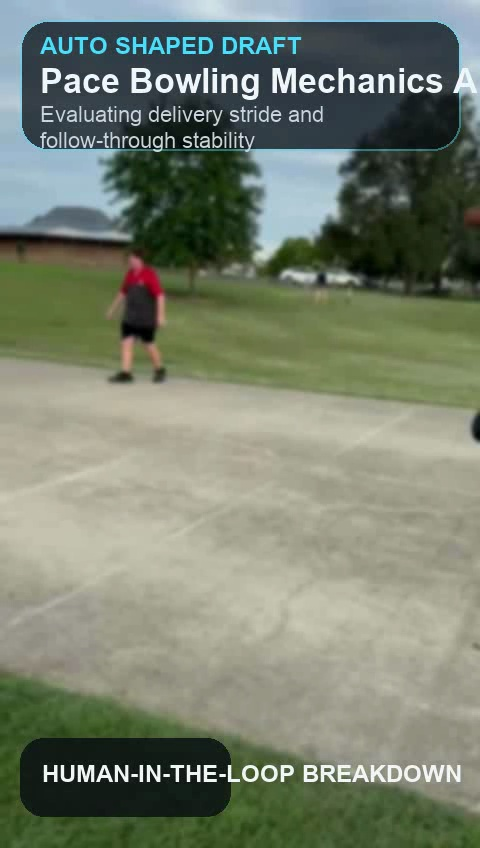
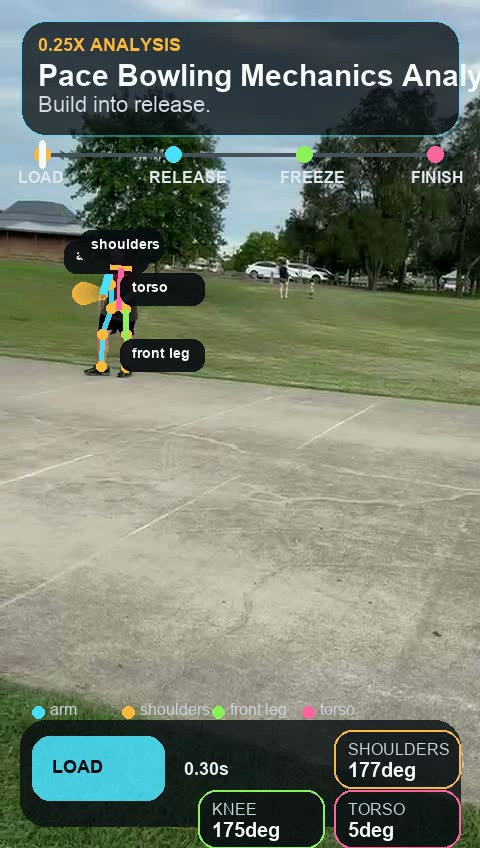
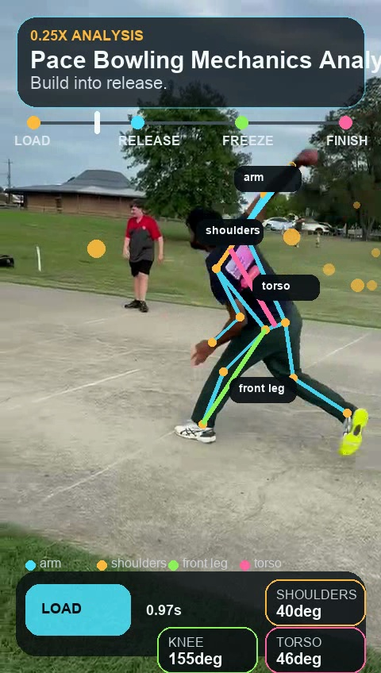
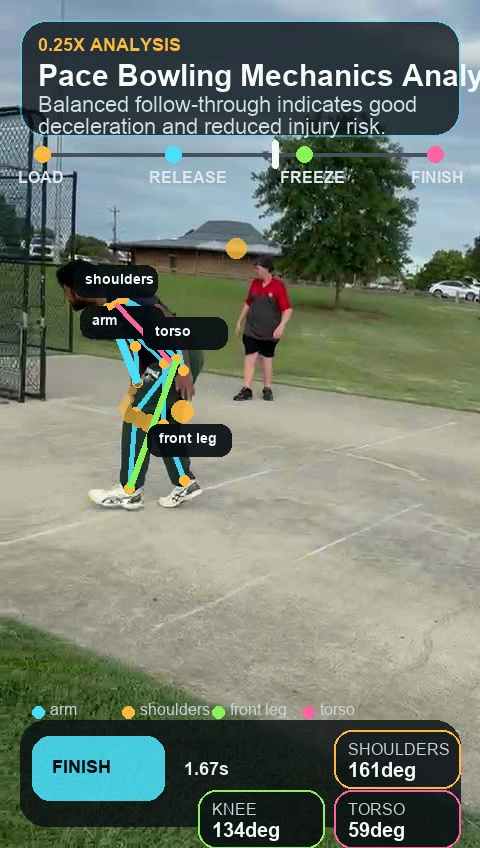
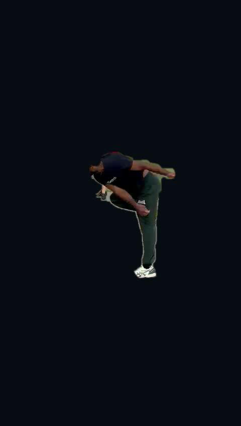
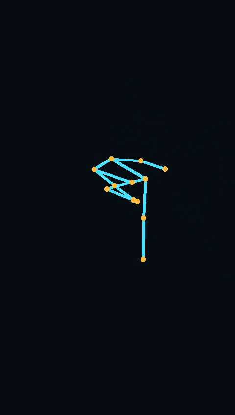

Browser-based verification for the annotated bowling analysis export.
File: annotated_analysis_qt.m4v (fallback: annotated_analysis.mp4)
Suggested review mode: 0.25x
If this still artifacts in Chrome, the export itself needs a safer transcode.

INTRO

LOAD

RELEASE

FREEZE
Bowler Figure Only
Subject Isolated
File: bowler_figure_only_qt.m4v
Purpose: verify full-video subject isolation without background people.

RELEASE CHECK
Pose Only
On-Device Skeleton
File: bowler_pose_only_qt.m4v
Purpose: inspect just the tracked bowling motion without visual clutter.

RELEASE CHECK
Brace Focus
Knee + Ankles
File: bowler_figure_brace_qt.m4v
Purpose: inspect the front-foot brace window without background clutter.